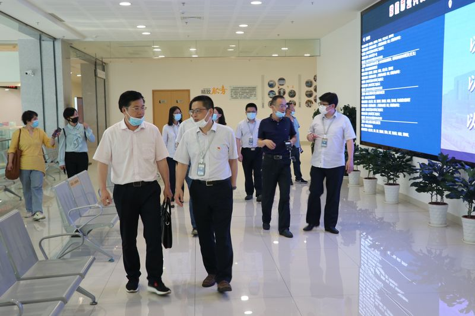
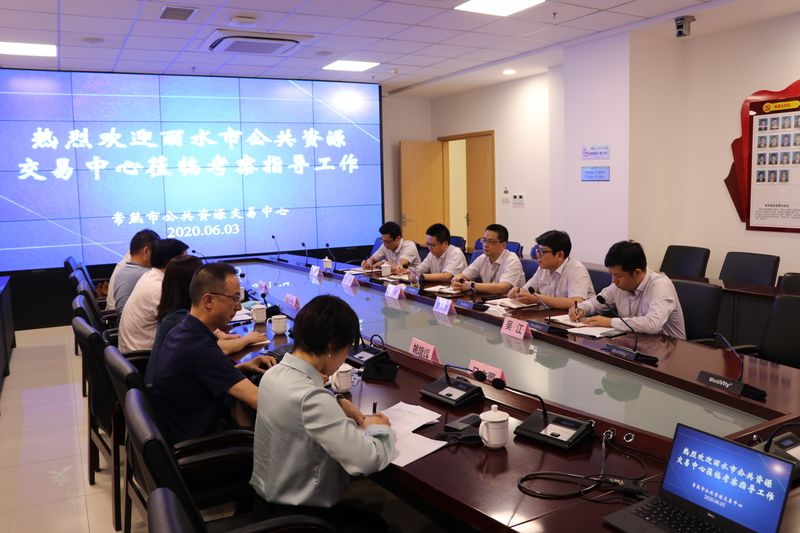
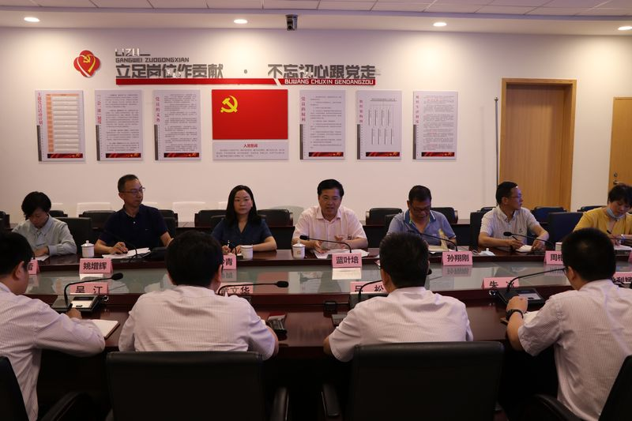

【信息发布时间：2020-06-04阅读次数：】 【我要打印】 【关闭】
6月3日，浙江省丽水市行政服务中心副主任、公共资源交易中心主任蓝叶培一行7人来交易中心考察，市行政审批局副局长、公共资源交易中心主任吕松等陪同参观并座谈。

简单实地观摩了交易中心的开评标现场后，考察组来到会议室，专题就《常熟市公共资源交易中心交易主体从业人员市场行为考核管理办法（试行）》（常公交易【2019】2号）文件，展开交流。吕松主任以及章文华、朱冰副主任，分别就考察组提出的《办法》制定的过程、出发点，市场主体从业人员的注册培训，交易系统内考核模块的相关设置，开标环节电子化签到，考核的具体标准、扣分方法、计分对象，以及《办法》实施以来的市场反应、具体成效等等30多个问题，一一作了耐心的解答。

蓝叶培主任表示，之前在公共资源交易现场管理方面同样遇到不少问题，在常熟找到了很好的解决之道，《办法》确实是公共资源交易现场管理的一个创新而又行之有效的举措。
